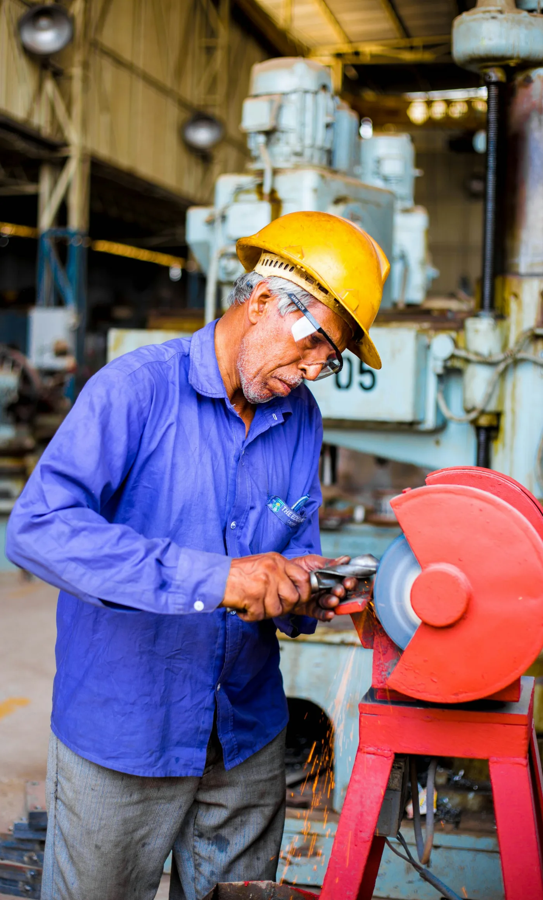

仕様をすり合わせる
用途・素材・数量・希望時期を確認します。
ENGINEERING THE EVERYDAY.
METAL FABRICATION / PROTOTYPING加工方法が、まだ決まっていなくても。
素材選びから量産まで
つくり手の目線で考えます。
金属加工から、ものづくりを支える。
DESIGN STUDY — TOWA INDUSTRIESOUR CAPABILITIES
形にするだけでなく、使われる場面まで。
品質・コスト・つくりやすさを一緒に整理します。
加工を選んで、相談の入口を知る
材料から、必要な形を削り出す。穴や溝、部品のかみ合わせを考えながら加工方法を選びます。
寸法だけでなく
どう使う部品かまで伺います。

THE PEOPLE BEHIND THE PARTS.OUR APPROACH
図面だけでは、わからないことがあります。
手に取ったときの感触。組み合わせたときの収まり。
その小さな違いを見逃さないために。
製造と検査の担当者が情報を共有し
次の工程へ、確かな状態で渡します。
対話仕様の背景まで聞く
工夫加工しやすい形を考える
確認工程ごとに品質を確かめる
HOW WE WORK
決まっていることも、迷っていることも。
まずは現在の状況をお聞かせください。
用途・素材・数量・希望時期を確認します。
加工工程とお見積もりをまとめます。
合意した仕様で製作し、品質を確認します。
組付けや使用後の状況まで伺います。
LET’S MAKE IT.
図面がなくても、構想段階でも。
相談内容を選ぶと、確認する項目がわかります。
ご相談の内容
つくりたい形・用途・必要な数量をお知らせください。図面やスケッチがあると、より具体的に検討できます。
デモのため、情報の送信・実際の受付は行いません。